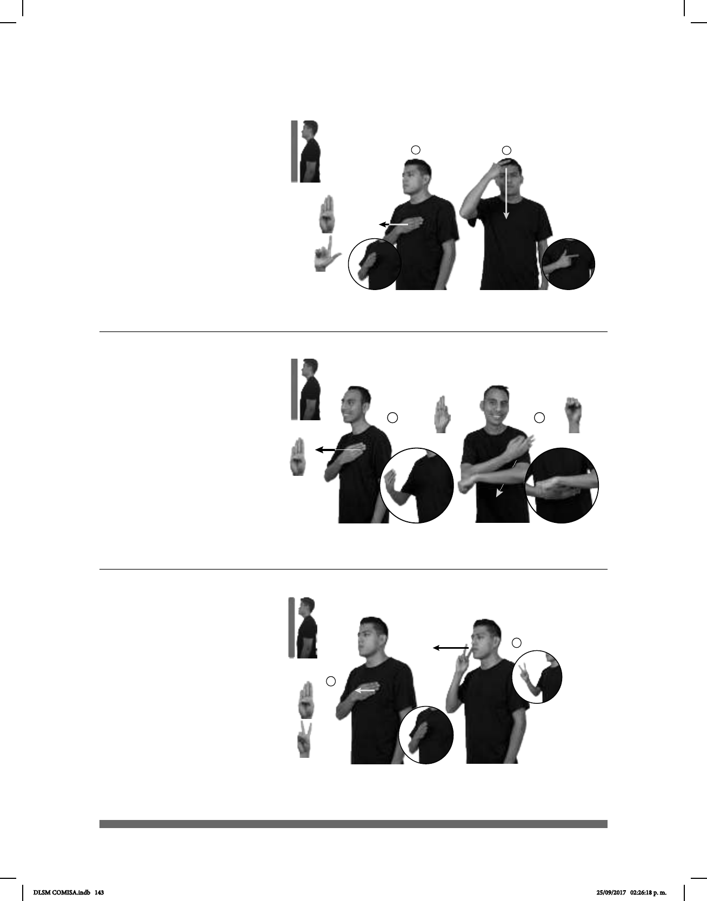

143
Seña: SC: I. y II. SM
I. B-P.1, II. L.1
I. y II. Palma hacia
adentro.
I. Sobre el pecho; II.
De la frente al pecho.
I. Recto hacia
enfrente; II. Recto.
interj. Saludo que se da
al encontrar a alguien durante ese
periodo y despedida que se da al
acostarse.
(B-P 97)
________________________¡ !__
BUENA NOCHE pro-TÚ DESCANSAR
¡Buenas noches, que descanses!
(B-P 98)
pro-MI ABUELO+MUJER ella-DECIR-a-mí BUENAS-TARDES
Mi abuela me dijo “buenas tardes”.
(B-P 99)
MAÑANA BUENAVISTA pro-YO IR
Mañana iré a Buenavista.
Seña: SC: I. SM; II. SB
I. B-P.1; II. MD F.1,
MB S.1
I. MD palma hacia aden-
tro; II. MD palma hacia adentro. MB
palma hacia abajo.
I. Sobre el pecho; II. MD
sobre la sangradura de MB. MB a la
altura del pecho.
I. Recto hacia enfrente; II.
MD recto.
Se esboza una
sonrisa.
Simula la puesta del
sol.
interj. Saludo utilizado como
fórmula de cortesía durante la tarde.
Seña: SC: I. SM; II. SM
I. B-P.1, II. 2.1
I. Palma hacia
adentro; II. Palma hacia la
izquierda.
I. Sobre el pecho; II. A
la altura de la cara del lado derecho.
I. y II. Recto hacia
enfrente.
1. Colonia de la Ciudad
de México ubicada en la delegación
Cuauhtémoc. 2. Estación del STC
Metro de la línea B.
DLSM COMISA.indb 143 25/09/2017 02:26:18 p. m.